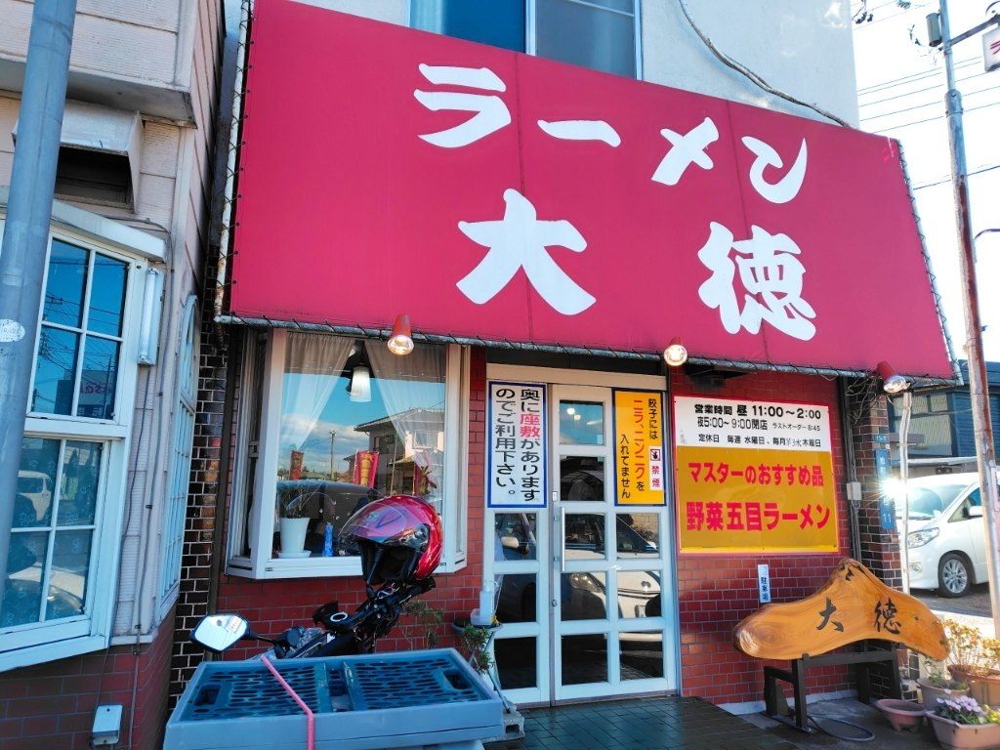
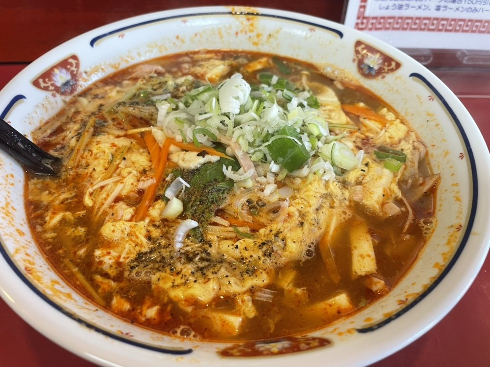
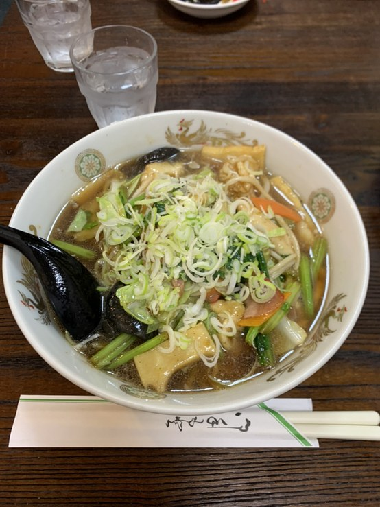
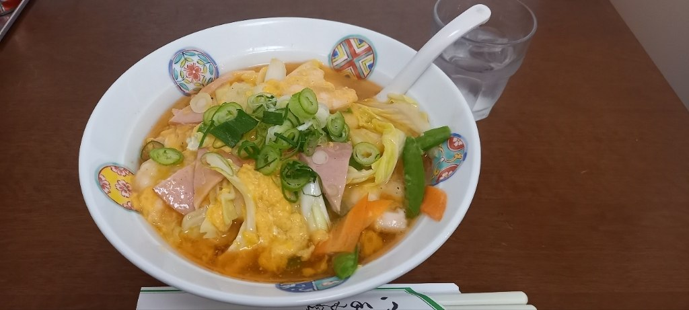
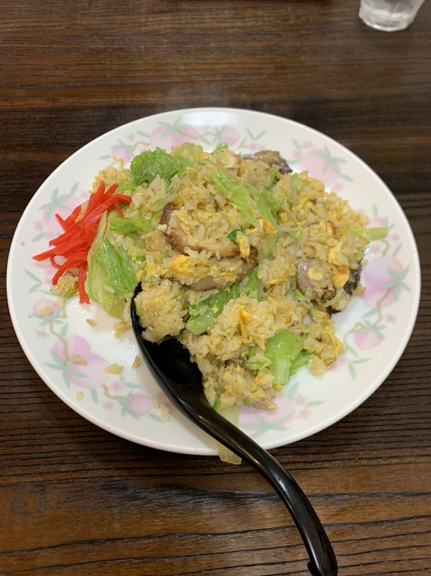
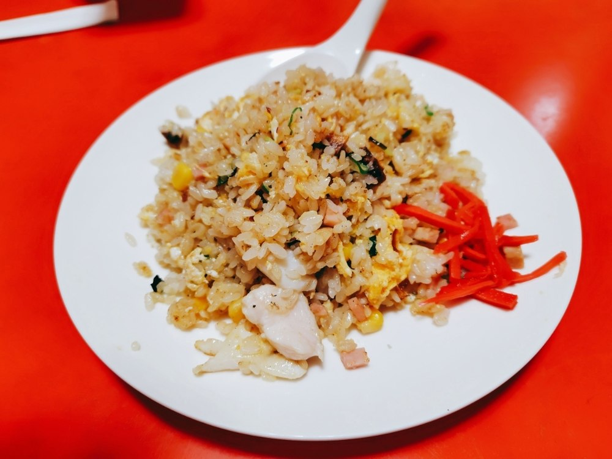
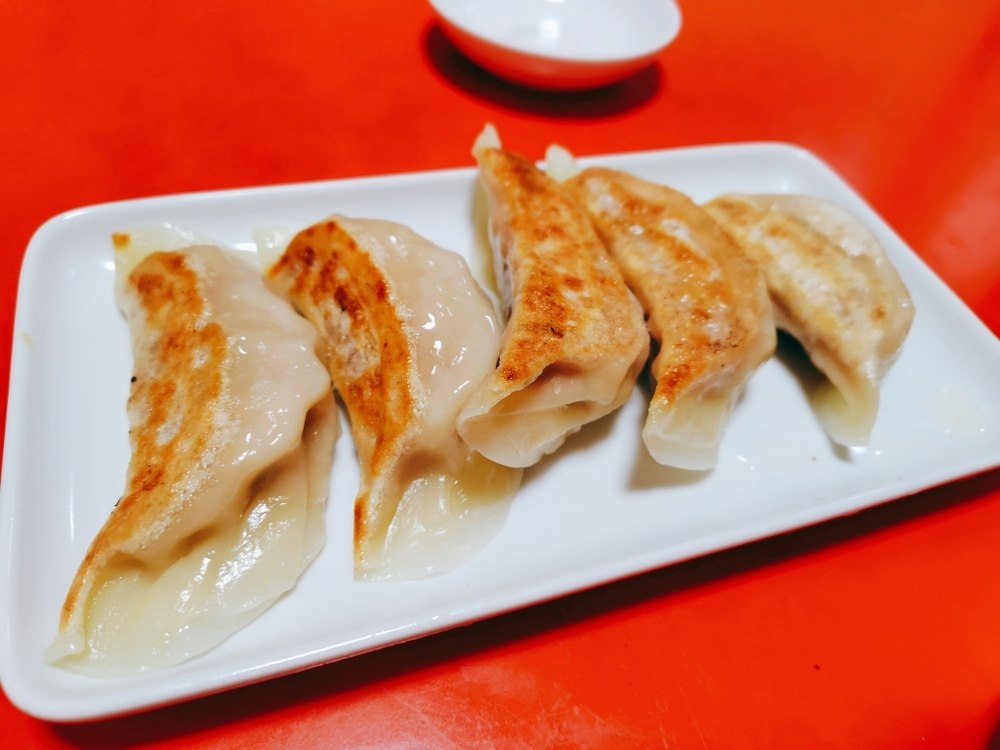
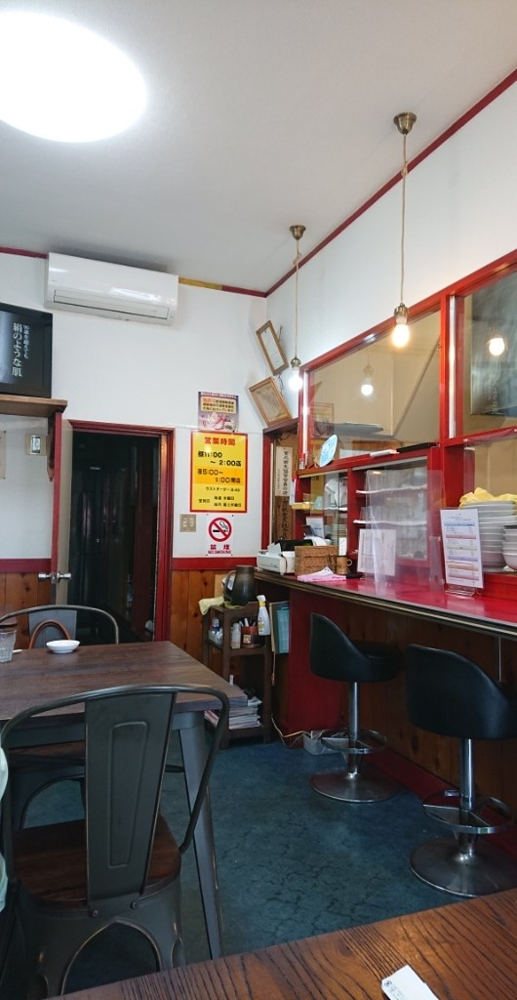
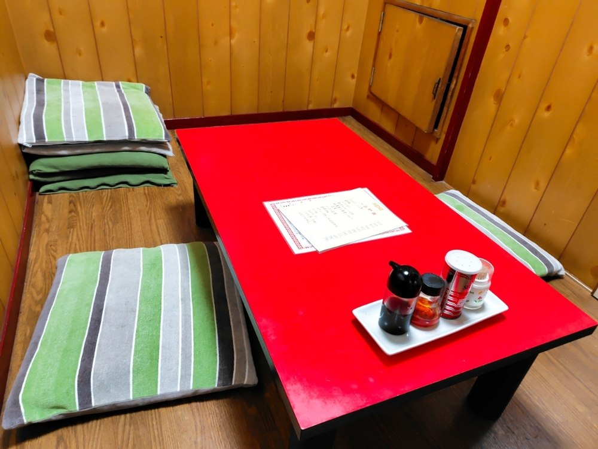

お品書きの一番上に、この二行を掲げております。
すんだスープをご用意しております。
濃厚なスープをご用意しております。
細めんをご用意しております。
手もみの平打ちめんをご用意しております。

酢を効かせた、酸味のある一杯です。酸っぱいものがお好きな方に、まずお勧めしております。

醤油だしのあんに、たっぷりの野菜と海老、いかをのせております。当店の看板の一杯です。
とろみのある餡と、手もみの平打ちめんを合わせた一杯です。

海老と野菜を、ふわりとした溶き卵でとじております。

チャーハンに、レタスをたっぷり混ぜ込んでおります。当店の看板の一品です。

五目チャーハンは、ハーフサイズでもお出ししております。

ニラとニンニクを使わず、キャベツと豚肉で仕立てた自家製の餃子です。
「野菜五目ラーメン」。イカ、海老、タケノコ、キクラゲ、にんじん、ネギ、ハム、鶏肉と具沢山で美味しい。まずは「チャーシューinレタスチャーハン」。中華料理店の炒飯だ。八角の風味がする中華料理店の炒飯だ。とても美味しい。次回も僕は「野菜五目ラーメン」にするだろう。非常に満足した。
2023年6月ご来店のお客様の声より
入り口はラーメン店、お店は中華料理店ぽくメニューもラーメンの種類がたくさん。その中でプリプリえびそばに目が止まり早速オーダー。文字通りプリプリのえびや野菜等が卵にくるまれて中華料理っぽい仕上げで美味しかったです。
2025年5月ご来店のお客様の声より
色々書いてあって、結局どれが一番のオススメなんだいっ！？って言いたくなるけど、美味しいです。酢ラーメンは俗にいう酸辣湯麺で、バチッと酢が効いてます。
2023年頃のお客様の声より

お一人でのご来店にもお使いいただけます。

奥のお座敷は、四名様までの個室としてもお使いいただけます。ご利用いただけない日もございますので、あらかじめお電話でご確認ください。
| 住所 | 〒306-0012 茨城県古河市旭町1-11-7 |
|---|---|
| 電話 | 0280-31-3798 |
| 営業時間 | 昼 11:00〜14:00（L.O. 13:45）／夜 17:00〜21:00（L.O. 20:45） |
| 定休日 | 毎週水曜日（第3週は水曜・木曜の連休） |
| 駐車場 | ございます（混み合う時間帯は停め方をお店の者にお尋ねください） |
| お持ち帰り | 承っております。品目はお電話でお尋ねください。 |
| お支払い | 現金のみ |